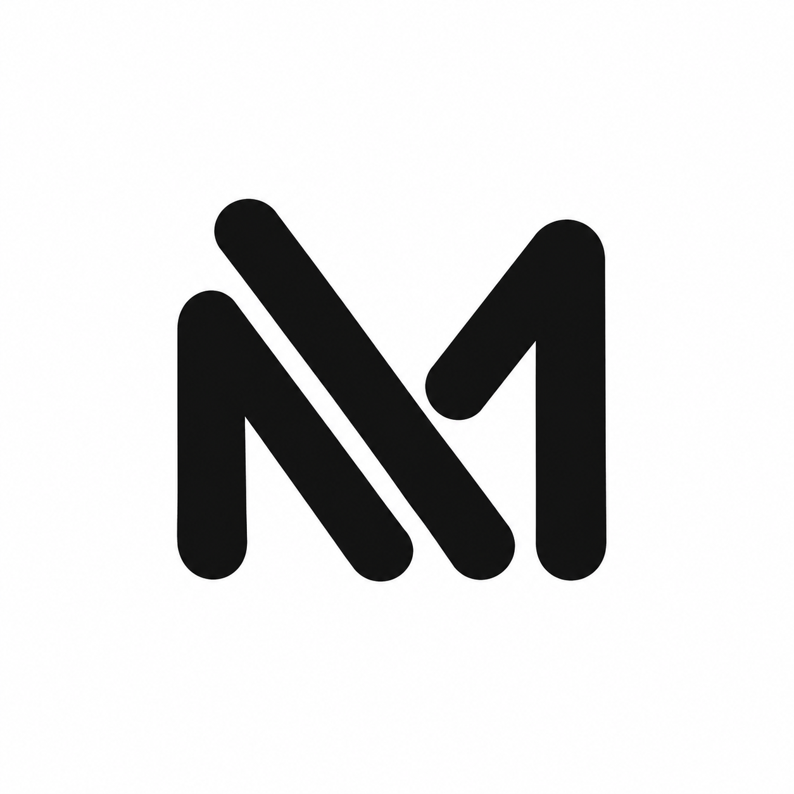
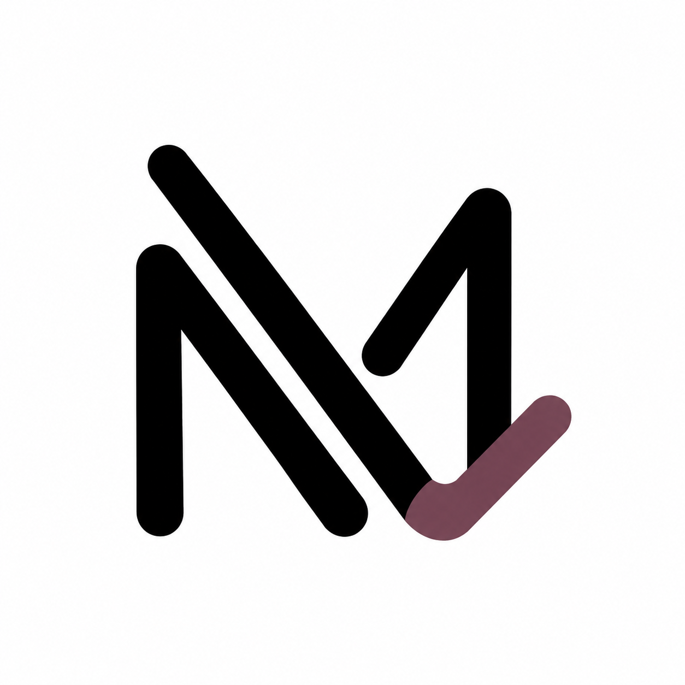
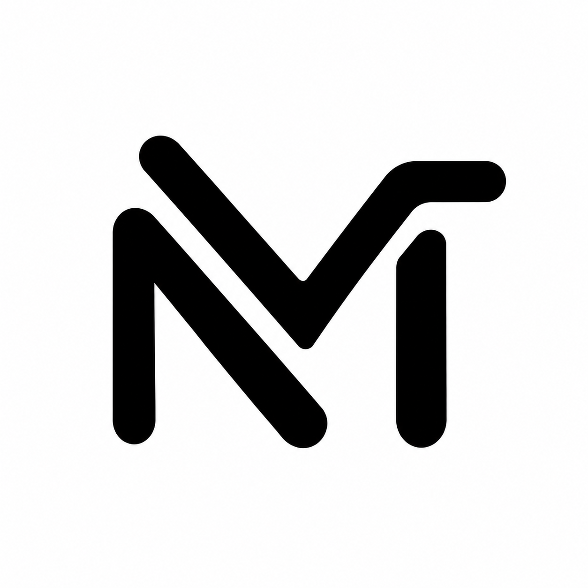
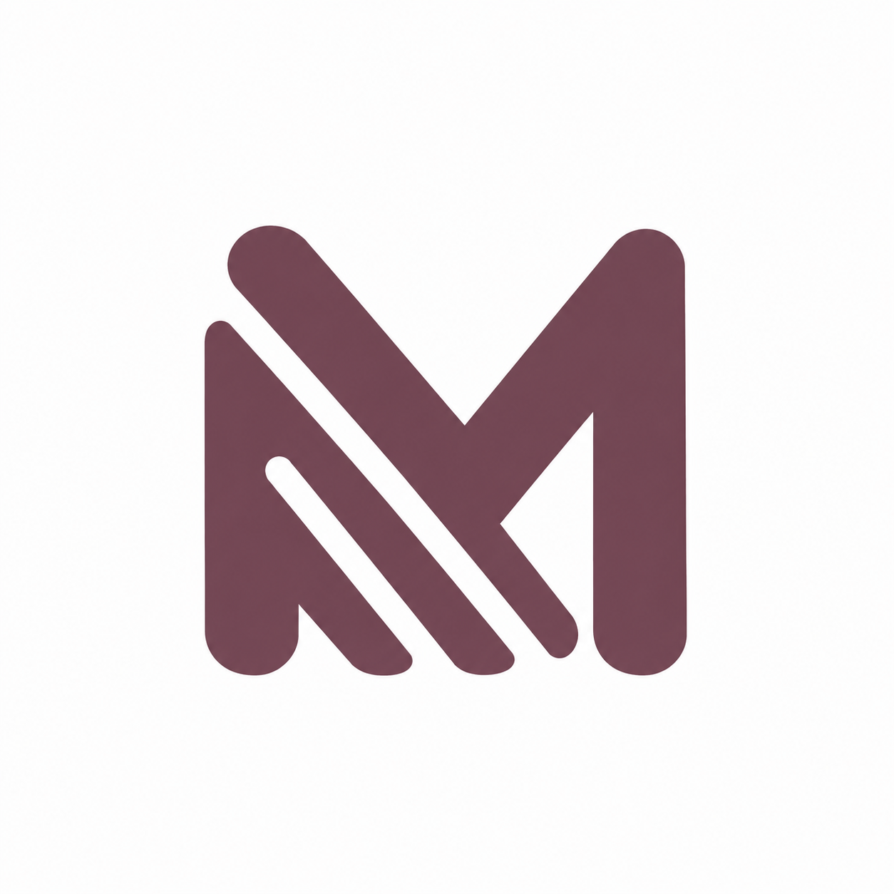

01
Bold monogram

72 px
32 px
Closest to the parent logo. Bolder strokes for a compact icon.
Attendance app · Four directions from the original monogram

Closest to the parent logo. Bolder strokes for a compact icon.

The check becomes part of the M, linking the mark to attendance.

A forward stroke suggests the app’s clock-in swipe.

A heavier plum silhouette with diagonal cutouts.
Original brand cues: rounded strokes, paired diagonals, open M construction.